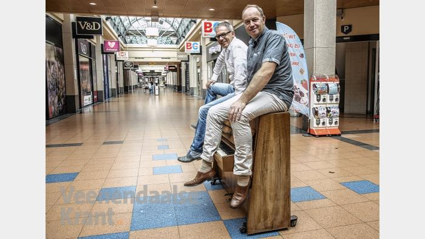

PIANOKLANKEN VERRASSEN WINKELEND PUBLIEK
< Terug >Tijdens het winkelen even achter de piano kruipen. Zomaar verrast worden door pianospel. Toeschouwers die meeluisteren. Bij mooi weer buiten pianoles krijgen. Dat gebeurt in Veenendaal.
In winkelcentrum Corridor en bij de Cultuurfabriek staan sinds afgelopen week twee stadspiano's. Deze piano's zijn een initiatief van twee Veenendaalse ondernemers en tevens muziekliefhebbers, Chris Stellaard van Pianore en Harold  Schonewille van Arts School Elevate. Pianore is een jong bedrijf dat piano's en vleugels verkoopt en verhuurd. Elevate is een school voor dans, muziek en creative arts.
Chris: "Aan de basis van het ontstaan van Pianore staat de liefde voor pianomuziek. Pianomuziek brengt gezelligheid. Met deze piano's willen we iedereen hiervan laten genieten. Zo willen wij een bijdrage leveren aan een mooiere en leukere wereld." Harold: "Chris kwam bij mij met het idee om een piano in het centrum te zetten. Daar wilde ik graag aan meedoen. Een mooie manier om muziek maken onder de aandacht te brengen".
Deze week worden de piano's gepimpt met een graffitilook. In het voorjaar gaan de piano's naar het Stadsstrand Landjepik.